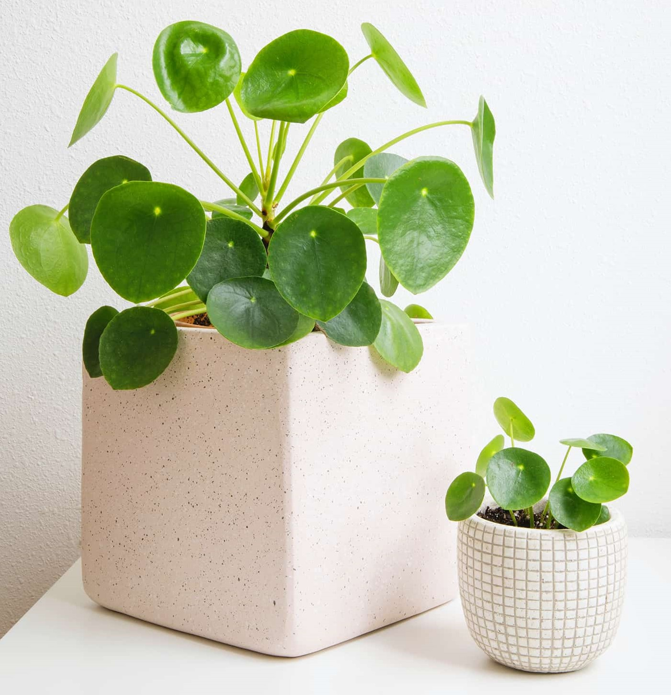
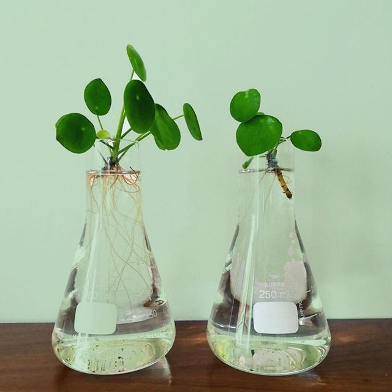

| Home | My Favorite Indoor plant | Indoor Plants | What Plant Are You Quiz |
|---|
The Pilea Pepperomia otherwise known as a chinese money plant is a nice indoor plant that is almost as easy as it gets when it comes to taking care of plants. It does not require any special attention or care and it is not a time consuming plant to take care of. Difficulty wise i would rate it a 2 out of 5, 1 being the easiest plant to take care of and 5 being the most difficult.
The Pilea Pepperomia, like many other plants should not have a specific watering schedule.
Indications that a Pilea Pepperomia should be watered

Bottom watering plants is an exellent choice since they can never be over or underwatered, the plants will take what they need no more, no less. This method only works if the plant pot has holes in the bottom so that the soil can absorb the water. If the water line does not descend after 15 minutes of soaking in the water then top watering is a better option, this method can fails if the plants roots arn't deep enough to soak up the water.
To bottom water a plant
This method is functional, but needs more attention to make sure the plant doesn't get over or under watered.
The Pilea likes to have a bright spot near a window prefferably out of direct sunlight if the spot is too hot, and the leaves are burning try to relocate to a cooler spot and if the plant isn't growing try to relocate to a brighter spot.

If the pilea is starting to need more frequent watering and has some off shutes that have at least one inch on stem above the soil then it may be time to propagate. Propagation is growing a new plant and old one and if usually fairly easy.
How to propagate